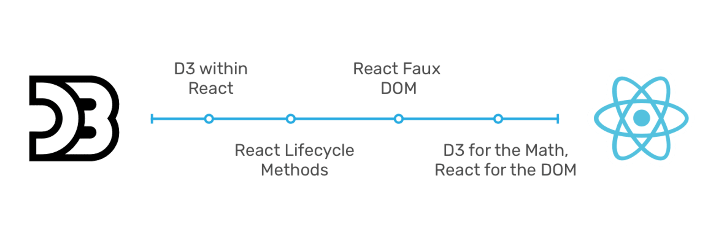

<!doctype html>
<html lang="en">
    <head>
        <meta charset="utf-8">
        <title>reveal-md</title>
        <link rel="stylesheet" href="./css/reveal.css">
        <link rel="stylesheet" href="./css/theme/solarized.css" id="theme">
        <link rel="stylesheet" href="./css/highlight/zenburn.css">
        <link rel="stylesheet" href="./css/print/paper.css" type="text/css" media="print">

    </head>
    <body>

        <div class="reveal">
            <div class="slides"><section  data-markdown><script type="text/template">## React et d3.js


12 Juin 2018<br>
<small>alain.roan@perceptible.fr - @AlainRoan</small>
</script></section><section  data-markdown><script type="text/template">
## d3js Toulouse 

 * #4 
 * TDV ([Toulouse-dataviz](http://toulouse-dataviz.fr/))
 * Association 1901
</script></section><section  data-markdown><script type="text/template">## Ordre du jour

1. d3.js en bref 
1. React.js en bref
1. Quel est le problème ?
3. Contributions
4. L'actualité et le futur

</script></section><section  data-markdown><script type="text/template">
#### Nos bacs à sable préférés: gist, bl.ocks, blockbuilder et maintenant Observable.hq

* Github permet de partager des fragments de code - **gist**
* [**bl.ocks.org**](https://bl.ocks.org/mbostock/f48fcdb929a620ed97877e4678ab15e6) (créé par Mike Bostock) permet d'éxecuter /visualiser ces fragments de code 
* [**blockbuilder.org**](http://blockbuilder.org/search#user=AlainRo) (créé par Ian Johnson) permet d'éditer / exécuter en temps réel ces fragments 
<small>Rob Foweraker (membre du d3js Toulouse) a créé une extension Chrome qui permet d'ajouter un bouton sur github pour aller directement à blockbuilder</small>
* [**Observable**](http://observablehq.com) (encore Mike) révolutionne le notebook javascript
</script></section><section  data-markdown><script type="text/template">### D3js v5
 * Une [bibliothèque](https://d3js.org/) javascript Mike Bostock - 2011
 * 76k stars on github, 250ko minimified for all modules
#### 40 Modules npm
 * **Layouts**: force, hierarchy, voronoi, sankey, chord, ... 
 * **Draw**: shapes, geo, path, contour, ...
 * **Colors**: hcg, hsv, ...
 * **Read/ parse**: csv, json, request, fetch, ...
 * **DOM, events**: selection, transition, zoom, drag, brush
 * **Utils**: scale, format, collection, axis, timer, ease

[*source treemap*](http://blockbuilder.org/AlainRo/d177015617b870b90b8b65ce48cc02bd)

</script></section><section  data-markdown><script type="text/template">### D3 Transition

	d3.select("body")
  	  .transition()
    	.style("background-color", "red");

#### Une transition
 * delay(time or function)
 * duration(time or function)
 * ease(function from [0,1] to [0,1]) 
 * start
 * end
 * interrupt


</script></section><section  data-markdown><script type="text/template">
### Transitions: plus complexe

 * [Multiple transitions](http://bl.ocks.org/AlainRo/863fc856f9113fa2f9b47eb1a99aafe4)
 * [Chained transitions](http://blockbuilder.org/mbostock/1125997)
 * [Concurrent transitions](http://blockbuilder.org/mbostock/5348789)
</script></section><section  data-markdown><script type="text/template">## les transitions d3, le temps et la synchronisation

 #### [d3-timer](https://github.com/d3/d3-timer) queue d'événements pour la gestion d'animations simultanées

 #### d3 essaye de résoudre le problème de la synchronisation des animations vis à vis d'un temps unique


[Bouncing Ball](http://bl.ocks.org/martinjc/2316749b029c043805e4a61f3b917234)
</script></section><section  data-markdown><script type="text/template">
# React en bref
<small>La présentation initialement prévue n'a pas pu être faite en séance et ne sera pas diffusée. A défaut voici des slides trouvés sur internet. Un peu ancien mais utile tout de même. </small> 
[React en slides](http://slides.com/alexanderfarennikov/react-js-fundamentals/fullscreen#/1)
</script></section><section  data-markdown><script type="text/template"># ALORS IL EST OU LE PROBLEME ?

</script></section><section  data-markdown><script type="text/template">
### Virtual DOM Vintage : curses
Une vieille bibliothèque Unix (1970-80) pour l'affichage plein écran sur liaison série (3270, Minitel, ...)

    initscr()       // initialise le mode plein écran
    move(lig, col)  // déplace virtuellement le curseur
    addstr(chaîne)  // écrit là où est le curseur
    refresh()       // rend l'écran conforme à l'affichage virtuel
    endwin()        // fin du mode plein écran 
A chaque refresh, un **diff** est réalisé pour minimiser le nombre de caractères à **renvoyer**
</script></section><section  data-markdown><script type="text/template">
### Panorama des approches


</script></section><section  data-markdown><script type="text/template">### Les évenements javascript et la communication inter-composants 

 * [Diagrammes synchronisés](http://blockbuilder.org/AlainRo/9264cd08e341f2c92f020c39642c34d1)
 * [Les transitions avec beaucoup de données](https://beta.observablehq.com/d/a81a8f1105e26814)
 * [Ou les deux](http://square.github.io/crossfilter/)

</script></section><section  data-markdown><script type="text/template">### Quelques approches

 - Un billet de synthèse [Thibaut Tiberghien](https://medium.com/@tibotiber/react-d3-js-balancing-performance-developer-experience-4da35f912484)
 - Un billet de synthèse très récent: [Marcos Iglesias](https://www.smashingmagazine.com/2018/02/react-d3-ecosystem/)
 - Bibliothèque Uber: [React-Vis](https://uber.github.io/react-vis/) - [Introduction](https://medium.com/dailyjs/data-visualization-with-react-vis-bd2587fe1660)
 - Blog (exemple complet mais vieux de 2 ans !!): [Jerome Cukier](http://www.jeromecukier.net/projects/react-weather/) - [*source*](https://github.com/jckr/react-weather)
 - Faux-dom: le blog d'[Oliver Caldwell](https://oli.me.uk/2015/09/09/d3-within-react-the-right-way/)
 - [Blog Swizec Teller](https://swizec.com/blog/declarative-d3-transitions-react/swizec/8323) et [exemple](https://codepen.io/swizec/pen/QdVoOg)
 - Un bac à sable perso d3-react sans **create-react-app** [Alain Roan](https://github.com/AlainRo/react-d3)

</script></section><section  data-markdown><script type="text/template"># Actualités
</script></section><section  data-markdown><script type="text/template">
## React 17
### Il y a peut être un problème pour d3
 https://dzone.com/articles/declarative-d3-transitions-with-react-163-video
</script></section><section  data-markdown><script type="text/template">
## Observable
### ALERT: un notebook observable est maintenant [downloadable et embeddable](https://beta.observablehq.com/@jashkenas/downloading-and-embedding-notebooks)
 * [Observable](https://beta.observablehq.com/)

 * [Cool notebooks](https://beta.observablehq.com/@fil/cool-observable-notebooks)

 * [Notebook Observable comme React Component](https://beta.observablehq.com/@jashkenas/how-to-embed-a-notebook-in-a-react-app)
</script></section><section  data-markdown><script type="text/template">
# FINI


</script></section></div>
        </div>

        <script src="./lib/js/head.min.js"></script>
        <script src="./js/reveal.js"></script>

        <script>
            function extend() {
              var target = {};
              for (var i = 0; i < arguments.length; i++) {
                var source = arguments[i];
                for (var key in source) {
                  if (source.hasOwnProperty(key)) {
                    target[key] = source[key];
                  }
                }
              }
              return target;
            }

            // Optional libraries used to extend on reveal.js
            var deps = [
              { src: './lib/js/classList.js', condition: function() { return !document.body.classList; } },
              { src: './plugin/markdown/marked.js', condition: function() { return !!document.querySelector('[data-markdown]'); } },
              { src: './plugin/markdown/markdown.js', condition: function() { return !!document.querySelector('[data-markdown]'); } },
              { src: './plugin/highlight/highlight.js', async: true, callback: function() { hljs.initHighlightingOnLoad(); } },
              { src: './plugin/zoom-js/zoom.js', async: true },
              { src: './plugin/notes/notes.js', async: true },
              { src: './plugin/math/math.js', async: true }
            ];

            // default options to init reveal.js
            var defaultOptions = {
              controls: true,
              progress: true,
              history: true,
              center: true,
              transition: 'default', // none/fade/slide/convex/concave/zoom
              dependencies: deps
            };

            // options from URL query string
            var queryOptions = Reveal.getQueryHash() || {};

            var options = {};
            options = extend(defaultOptions, options, queryOptions);
        </script>


        <script>
            Reveal.initialize(options);
        </script>
    </body>
</html>
